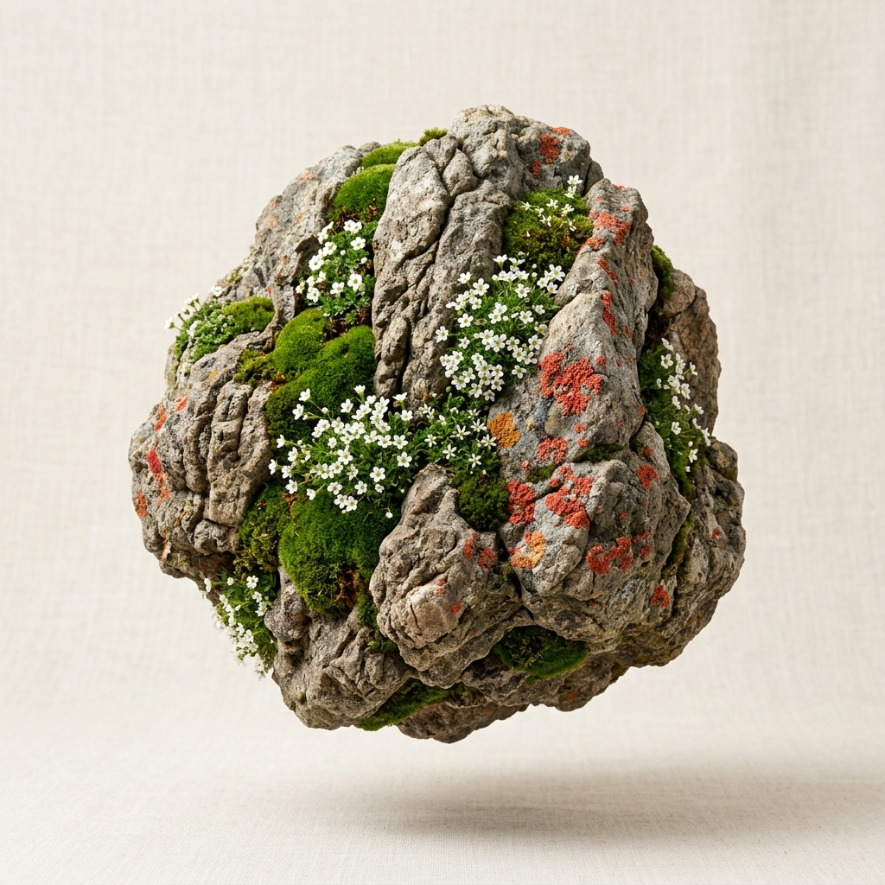
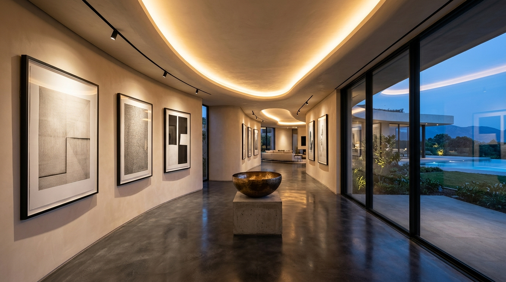
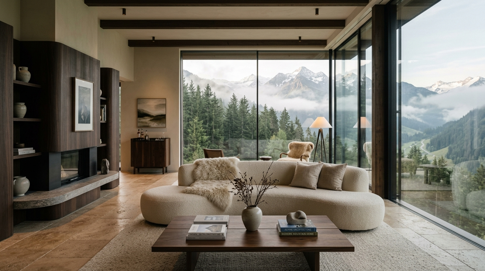

Living Monolith Collection

Elevation 3,200mAlpine Saxifrage Monolith
High-altitude granite matrix inoculated with endemic sub-alpine saxifrage and cushion bryophytes. Self-sustaining capillary moisture retention.
Velvet Bryophyte Sanctuary
Cultivated inside pressurized architectural glass cloches. Layered volcanic tuff stone support with micro-fern sporangia and living lichens.
Crustose Lichen Pillar
Slow-growth crustose lichen colony on metamorphic quartzite. Features vivid ochre and coral spore fruiting bodies with micro-irrigation channels.


Greenhouse Grading Protocol
Geological Core Sourcing
Non-invasive harvesting of mineral-dense granite and volcanic basalt boulders selected for balanced capillary porosity.
Controlled Bio-Inoculation
Sterile laboratory inoculation of cold-tolerant alpine bryophytes and lichen colonies under circadian spectral illumination.
Architectural Climate Stabilization
Specimens undergo 18 months of rigorous micro-climate acclimatization before certification for residential and public spaces.
Habitat Vitality Simulator
Sub-alpine moss spore colonies maintain optimal photosynthetic chlorophyll density. Zero fungal pathogens detected across granite capillary pathways.
Architectural Installations
Commission a Living Monolith
Alpine Granite • Saxifrage
Hand-quarried high-porosity matrix with 18-month laboratory bio-inoculation. Delivered with integrated capillary irrigation foundation.